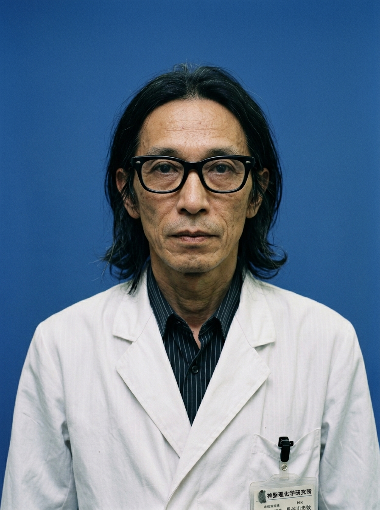

職員個人用ファイル：長谷川 忠敬

| 氏名 | 長谷川 忠敬 |
|---|---|
| 生年月日 | 1948年11月12日 |
| 物理的特徴 | 172cm / 70kg |
| 所属 | 第一研究所（神経生理部門） |
| 職位 | 主任研究員 |
| 専門分野 | 神経生理学、生体工学 |
1. 主な担当領域
- 有機物定常凍結理論の確立： 生体を構成する分子活動を、細胞壁を破壊することなく極低温下で完全に停止（定常化）させ、理論上永劫に保存する技術の主導。
- 細胞内時間軸の凍結と再始動： 老化プロセスの根本原因である分子レベルのエントロピー増大を外部から制御し、細胞の「時間」を任意に停止・再開させる手法の研究。
- 高次精神活動維持のための分子補完： 長期定常凍結において、脳神経細胞のシグナル伝達物質が分子崩壊を起こすのを防ぎ、解凍後に精神活動を完全に復元するための化学的アプローチの開発。
2. キャリア要約
- 1971年03月： 聖理科大学工学部 生体工学科を卒業。
- 1973年03月： 同大学院 博士前期課程修了。
- 1975年01月： 神聖理化学研究所 入所。
- 1982年04月： 第一研究所 副主任研究員に昇格。
- 1989年10月： 第一研究所 主任研究員に昇格。